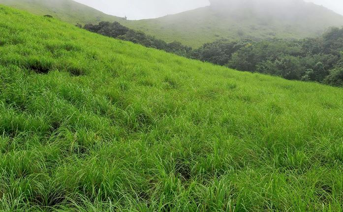

Kasargod
1. Bekal Fort

The 300 years old defensive mechanism which is the largest and well-preserved fort makes it one of the best Kasaragod tourist place. You can get an enthralling view of the mesmerizing Arabian sea from the fort’s observation tower which was once used to fire the cannons!The impressive strength of the fort brings a herd of tourists to witness the glorious past and be awestruck. Visit an old mosque near this fort to dive deeper into history.
2. Ranipuram Hills
Previously known as Madathumala, situated 750 meters above sea level, this destination boasts of some of the marvelous trekking trails of about two and a half kilometers with a cave at the summit. If seeking leisure the greens of shola woods and monsoon forests have all their natural beauty to offer you. A combination of both adventure and leisure marks this place to be counted as one of the considerable tourist places on Kasaragod. Be it an adventure folk or solace seeker, this is one destination for all kinds of travelers.